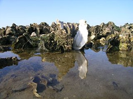

Project Description

Marine invasive alien species (IAS) are an important threat to biodiversity, with important ecological and economic consequences. This threat is not well understood in Ireland. Management tools must therefore be future proofed by making sure they can be rapidly applied to new IAS introductions, as well as the IAS that have already established. A key management tool is to rapidly predict the species potential for spread.
This project will:
- develop models for larval dispersal and establishment of focal species for specific locations along the Irish coast
- combine this modelling with a study of potential impacts of these focal IAS on ecosystems and society under different management scenarios.
Larval dispersal will be modelled using Lagrangian particle tracking models, driven by hydrodynamic data at two spatial resolutions: the medium resolution hydrodynamic data from the Marine Institute’s Regional Ocean Modelling System (ROMS), and high resolution, eddy resolving, data from the Connemara and Bantry Bay models (http://www.marine.ie/Home/site-area/data-services/marine-forecasts/ocean-forecasts). These two high resolution models will provide potential invasive species spread scenarios for a limited length of coastline, but the modelling methodology could be extended to other parts of the coastline when high resolution data become available. IAS population establishment will be modelled using habitat niche modelling.